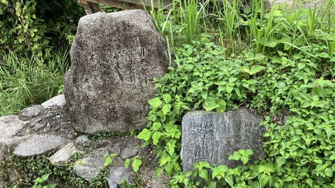
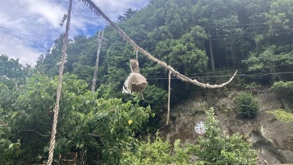

飛鳥川にまつわる万葉碑
万葉集に詠まれた飛鳥川にまつわる歌を伝える万葉碑があります。万葉の時代に思いを馳せながら眺めてみたい場所です。

飛鳥川飛び石は、飛鳥川を歩いて渡ることができる、明日香村を代表する自然景観スポットです。 川の流れや周囲の田園風景を身近に感じることができ、昔ながらの飛鳥の風景を楽しめます。 季節によって表情を変える自然の中で、ゆっくり散策できる人気の場所です。
| 見学時間 | 自由散策 |
|---|---|
| 定休日 | なし |
| 料金 | 無料 |
| 所要時間 | 10〜15分 |
| 駐車場 | 石舞台駐車場 （徒歩約30分） |
| アクセス | 近鉄飛鳥駅から徒歩約50分 |
| 地図 | 地図はこちら |

万葉集に詠まれた飛鳥川にまつわる歌を伝える万葉碑があります。万葉の時代に思いを馳せながら眺めてみたい場所です。

周辺には、豊作や子孫繁栄を願う伝統行事「男綱・女綱」があり、飛鳥地域に残る民俗文化にも触れられます。
飛鳥川は、万葉集にも登場する歴史ある川です。 古代から人々の生活と深く関わり、現在も明日香村の自然景観を代表する存在となっています。 飛び石は、川を渡るための昔ながらの知恵を感じられる場所として残されています。